本项目设计并实现了一个面向普通消费者的一站式在线购物系统 —— DhuStore（东华购物）。 系统采用前后端分离架构：后端基于 Spring Boot 4.1.1 与原生 MyBatis 构建 RESTful API， 使用 MySQL 进行数据持久化，通过 JWT 实现无状态身份认证；前端基于 Vue 3 与原生 JavaScript 模块化开发，提供商品浏览、购物车、下单结算、订单管理、个人中心与后台管理等完整交互。
在传统商城功能之上，系统进一步扩展了「用户发布商品」能力：普通用户可以提交商品发布申请， 上传 1~9 张商品图片，由管理员审核；审核通过后，系统在同一个数据库事务内完成 「更新申请状态 + 创建正式商品 + 复制图片关系」，保证数据一致性，并记录商品归属卖家。 商品图片支持阿里云 OSS 存储，未配置 OSS 时自动回退到本地磁盘，兼顾部署成本与可移植性。
后台管理模块提供数据看板、商品管理、分类管理、订单管理与发布申请审核，并支持首页内容运营—— 轮播图、促销位、分类图标与封面、限时秒杀均可自助配置，帮助运营人员掌握销售趋势、处理待发货订单 并完成商品上架审核。系统在安全性方面做了较完整的设计，包括 BCrypt 密码加密、JWT 鉴权、基于角色 的接口权限控制、上传文件的类型与大小校验、UUID 重命名与路径穿越防护。
随着电子商务的普及，在线购物已成为人们日常消费的重要方式。一个完整的购物系统不仅需要 商品展示与交易流程，还需要处理库存、订单状态、用户身份、支付方式以及售后等业务。 本项目在此基础上进一步引入「用户作为卖家发布商品」的 C2C 能力，使平台从单一自营商城 扩展为可以容纳第三方商品的综合性商城。
| 角色 | 职责与权限 |
|---|---|
| 游客 | 浏览商品分类与商品列表、搜索商品、查看商品详情。无需登录。 |
| 普通用户 | 注册登录、管理购物车与收货地址、下单与支付、取消订单、确认收货、再次购买；提交商品发布申请并查看审核结果。 |
| 管理员 | 查看数据看板、维护商品信息、管理全部订单并执行发货、审核用户提交的商品发布申请。 |
| 模块 | 功能点 | 使用角色 |
|---|---|---|
| 认证与用户 | 注册、登录、获取当前用户、修改个人资料、头像上传（即时预览 + 保存生效） | 全体用户 |
| 商品浏览 | 分类列表、商品分页、关键词搜索、搜索联想、商品详情与多图浏览 | 游客 / 用户 |
| 首页 | 轮播、分类入口（16:9 场景图卡 + 折叠展开）、限时秒杀、商品推荐 | 全体用户 |
| 购物车 | 加入购物车、修改数量、勾选与全选、删除、清空选中 | 普通用户 |
| 收货地址 | 新增、编辑、删除、设置默认地址 | 普通用户 |
| 订单 | 提交订单、支付、取消、确认收货、订单列表与详情、再次购买 | 普通用户 |
| 商品发布 | 提交发布申请、上传多图、查看我的申请与审核结果 | 普通用户 |
| 审核管理 | 查看申请列表、查看详情与图片、通过或拒绝（填写原因） | 管理员 |
| 后台运营 | 数据看板、商品管理、分类管理、订单管理与发货、首页内容运营、限时秒杀配置 | 管理员 |
| 消息提醒 | 待发货 / 待收货角标，按角色与页面层级切换显示位置 | 用户 / 管理员 |
| 类别 | 要求 |
|---|---|
| 安全性 | 密码不可逆加密存储；接口需鉴权；管理员接口做角色校验；上传文件做格式、大小、类型与路径校验。 |
| 一致性 | 下单扣库存、取消回滚库存、审核通过创建商品均需在事务中完成，避免脏数据。 |
| 可用性 | 统一响应格式与业务错误码；前端对加载、失败、空数据均有明确状态提示。 |
| 可维护性 | 严格分层（Controller / Service / Mapper），接口与实现分离，SQL 集中于 XML。 |
| 可移植性 | 图片存储支持 OSS 与本地磁盘两种模式，通过配置切换，无需修改代码。 |
系统采用典型的三层 B/S 架构。浏览器加载 Vue 3 单页应用，前端通过 fetch
调用以 /api 开头的 RESTful 接口；后端在进入 Controller 之前由 JWT 拦截器
完成身份解析与权限校验，随后由 Service 层组织业务与事务，Mapper 层通过 XML 执行 SQL，
最终访问 MySQL 与阿里云 OSS。
| 层次 | 技术 | 选型理由 |
|---|---|---|
| 后端框架 | Spring Boot 4.1.1 | 自动配置、生态成熟，快速构建 REST 服务。 |
| 持久层 | 原生 MyBatis 3 + XML | SQL 完全可控，便于优化联表查询与批量操作。 |
| 数据库 | MySQL 8 | 事务支持完善，适合订单与库存等强一致场景。 |
| 认证 | JJWT 0.12.7 | 无状态 token，便于前后端分离与水平扩展。 |
| 密码加密 | BCrypt（Spring Security Crypto） | 自带盐值、可调强度，抗彩虹表攻击。 |
| 参数校验 | Jakarta Validation | 声明式校验，统一异常处理返回明确提示。 |
| 对象存储 | 阿里云 OSS SDK 3.17.4 | 稳定可靠，支持公共读与 CDN 加速。 |
| 前端 | Vue 3.5 + 原生 JS 模块 | 轻量、无构建步骤，直接由后端托管静态资源。 |
| 图表 | 原生 SVG | 无第三方库依赖，体积小、打印清晰。 |
| 包 | 职责 |
|---|---|
controller | 接收 HTTP 请求、参数校验、调用 Service 并返回统一响应。 |
service | 业务编排与事务控制，是唯一允许跨 Mapper 组合操作的一层。 |
mapper + XML | 数据访问接口与 SQL 映射，负责单表与联表查询。 |
entity / dto | 数据库实体与请求/响应对象，隔离内外数据结构。 |
common | 统一响应、业务异常、错误码、分页结果、全局异常处理。 |
config | JWT 拦截器、CORS、密码编码器、静态资源映射、示例数据初始化。 |
util | JWT 工具与当前登录用户上下文（ThreadLocal）。 |
系统共设计 13 张数据表。用户与购物车、地址、订单、发布申请均为一对多关系；
商品与商品图片为一对多；申请与申请图片为一对多。审核通过时，申请图片会被复制为商品图片，
从而在数据库中形成「申请数据」与「正式商品数据」的物理隔离。
此外，banner（轮播）、site_setting（站点配置）与
flash_sale（秒杀位）三张表支撑首页内容运营，均与商品表形成弱引用关系。
| 表名 | 说明 | 关键字段 |
|---|---|---|
user | 用户账号与角色 | username、password、avatar、role、status |
category | 商品分类（含图标与封面） | name、parent_id、icon、cover、sort、status |
product | 正式商品 | category_id、seller_id、price、stock、status |
product_image | 商品图片（1~9 张） | product_id、image_url、sort |
product_apply | 商品发布申请 | user_id、status、reject_reason、auditor_id |
product_apply_image | 申请图片 | apply_id、image_url、sort |
address | 收货地址 | user_id、receiver_name、is_default |
cart_item | 购物车 | user_id、product_id、quantity、checked |
orders | 订单主表 | order_no、total_price、status、receiver_* |
order_item | 订单明细（快照） | order_id、product_name、unit_price、quantity |
banner | 首页轮播图 | image_url、sort、status（≤5 张） |
site_setting | 站点配置键值对 | key、value（促销位图片） |
flash_sale | 首页秒杀位 | product_id（唯一）、sort（只存引用） |
| 状态 | 含义 | 触发方 |
|---|---|---|
| 0 | 待付款 | 下单后 |
| 1 | 已付款 / 待发货 | 用户支付 |
| 2 | 已发货 / 待收货 | 管理员发货 |
| 3 | 已完成 | 用户确认收货 |
| 4 | 已取消 | 用户取消（归还库存） |
| 状态 | 含义 | 说明 |
|---|---|---|
| 0 | 待审核 | 用户提交后 |
| 1 | 审核通过 | 事务内生成正式商品 |
| 2 | 审核拒绝 | 需填写拒绝原因 |
seller_id 记录，为后续「我的商品」「卖家中心」等功能预留扩展空间。
下单是系统中最需要保证一致性的流程。用户在购物车勾选商品后进入结算页，选择收货地址与支付方式， 提交订单时后端在同一个事务内依次完成：校验地址归属、读取勾选商品、逐项扣减库存并增加销量、 写入订单主表与明细表、清除已结算的购物车项。任一商品库存不足都会抛出业务异常并回滚整个事务。
用户提交的商品不会直接写入正式商品表，而是先写入 product_apply 与
product_apply_image。管理员审核通过时，后端在同一个事务内完成三件事：
更新申请状态与审核信息、创建 product 记录（写入 seller_id）、
把申请图片复制到 product_image。这样既保证了「申请通过」与「商品创建」的原子性，
也天然实现了申请数据与正式数据的隔离。
status = 0 的申请允许操作，
否则返回业务码 2005（该申请已审核），避免重复生成商品。
图片上传采用「前端预校验 + 后端强校验」的双重机制。前端在用户选择文件时立即校验数量、格式与大小， 并调用上传接口即时预览；后端再次校验文件大小、扩展名与 Content-Type，校验通过后使用 UUID 重命名并写入 OSS，返回可访问的 URL。订单、商品详情等场景只保存 URL，不保存二进制数据。
product/{yyyy}/{MM}/{uuid}.{ext}
示例：https://dhu-stroe.oss-cn-shanghai.aliyuncs.com/product/2026/10/625c6fef11b64b91b5f32f1a9905fce6.png
用户登录成功后，后端使用 HS256 算法签发 JWT，载荷包含用户 ID、用户名与角色。前端将 token
保存在 localStorage，之后所有请求通过 Authorization: Bearer <token>
携带。后端拦截器对 /api/** 统一解析 token：若接口标注 @RequireLogin
则强制要求登录；标注 @RequireAdmin 时额外要求角色为 1。当前用户信息通过
ThreadLocal 在请求生命周期内传递，请求结束后统一清理，避免线程复用导致的数据串扰。
首页的轮播图、促销位、分类图标与封面、限时秒杀均可在后台自助配置，不再写死在前端代码里。
轮播图存于 banner 表（最多 5 张，超出返回业务码 2011）；两个促销位图片存于
site_setting 键值表；分类图标与 16:9 封面分别存于 category.icon 与
category.cover。所有素材统一通过 POST /api/common/upload 上传，
数据库只保存 URL。未配置素材时，各位置回落到内置占位：轮播显示空白占位、促销位回落到渐变卡片、
分类无封面时回落到按分类色相生成的柔和渐变。
秒杀位存于 flash_sale 表，product_id 唯一约束保证同一商品不重复上秒杀位，
最多 8 个，首页按 sort 顺序展示前 4 个。与常规「快照」做法不同，秒杀位只存商品引用，
商品的改价、库存变化、下架都会实时反映到首页，避免数据不一致。重复添加返回业务码 2014、超限返回
2015。前台秒杀数据优先读取后台配置，未配置时回落到「按库存自动取前 4 件」。
以下截图均来自系统实际运行页面，数据通过后端接口实时读取。
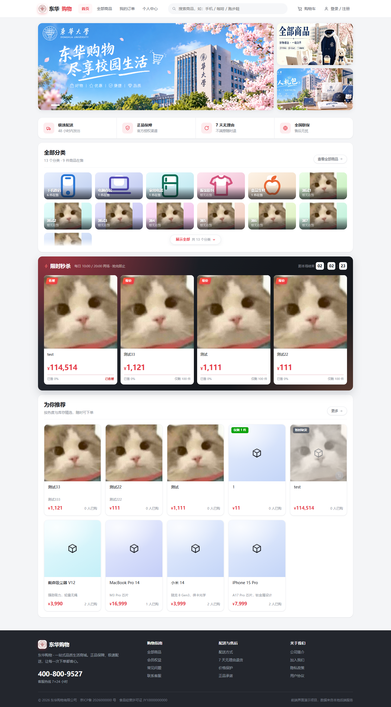
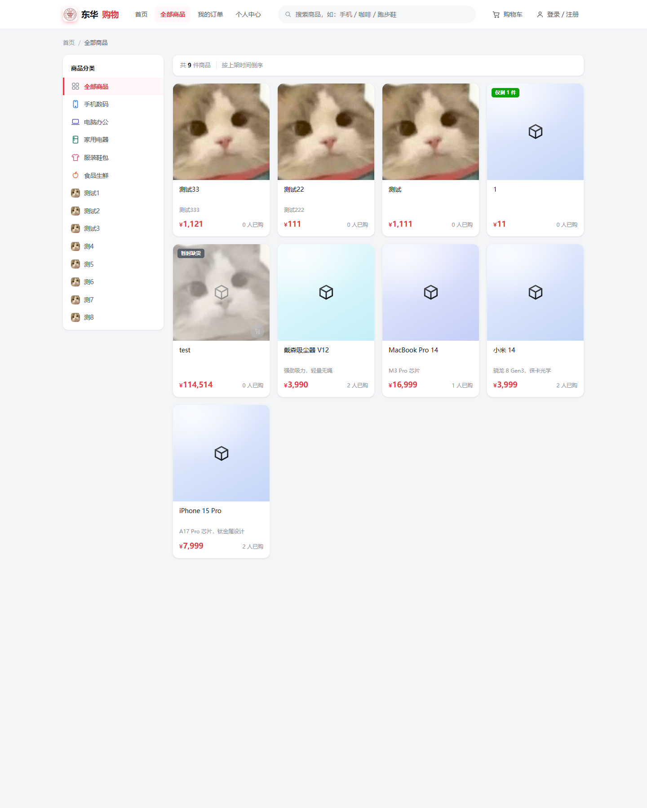
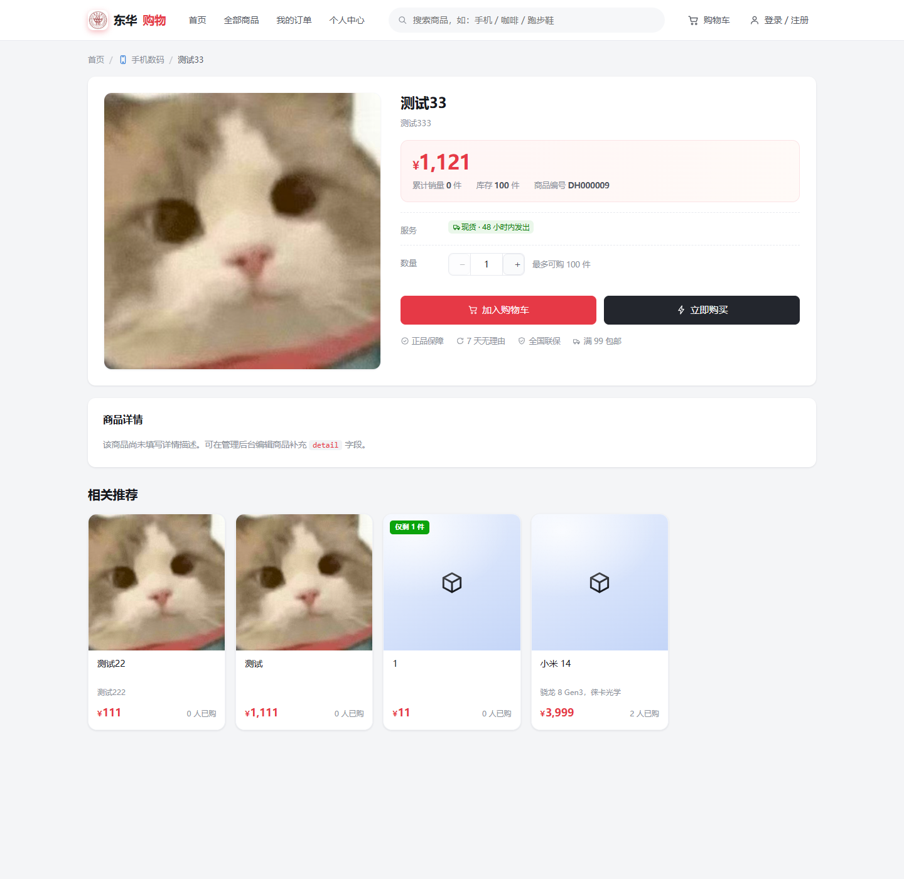
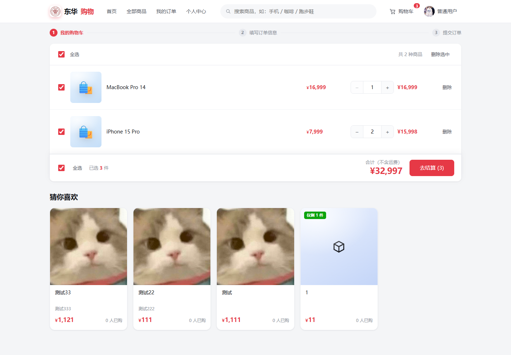
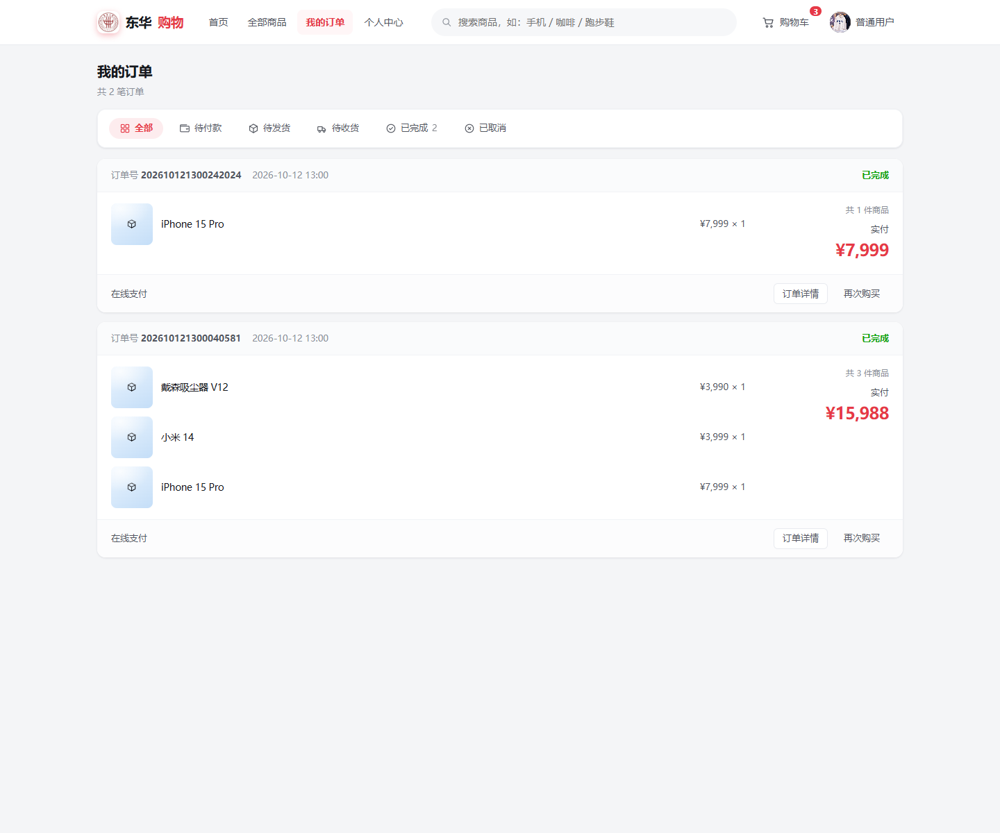
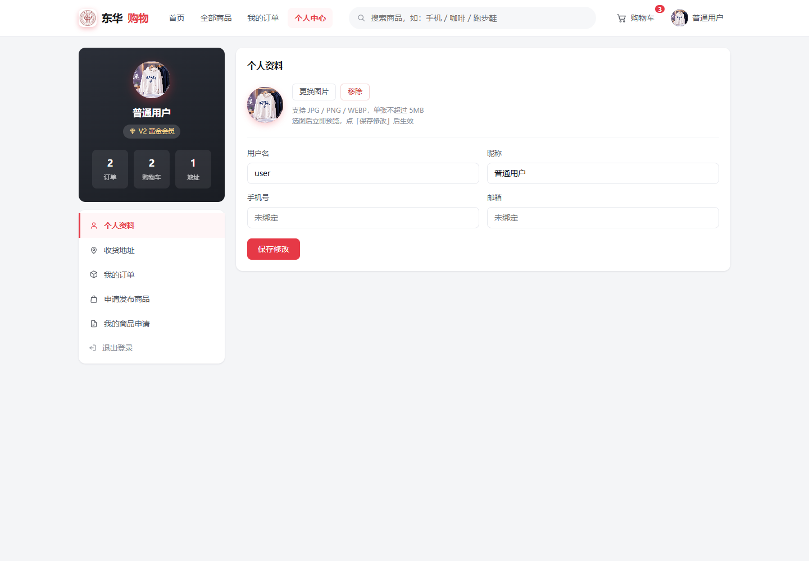
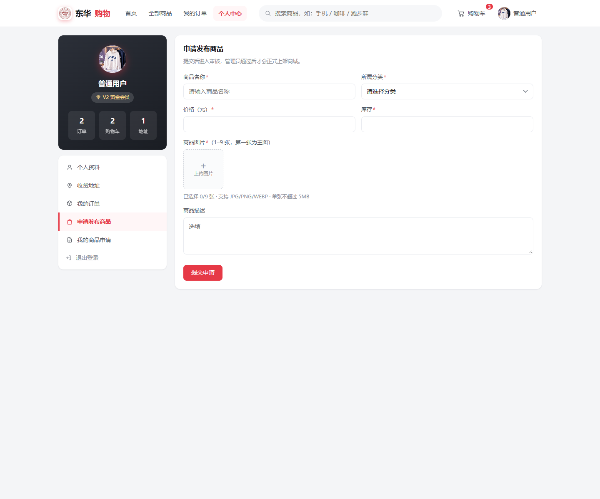
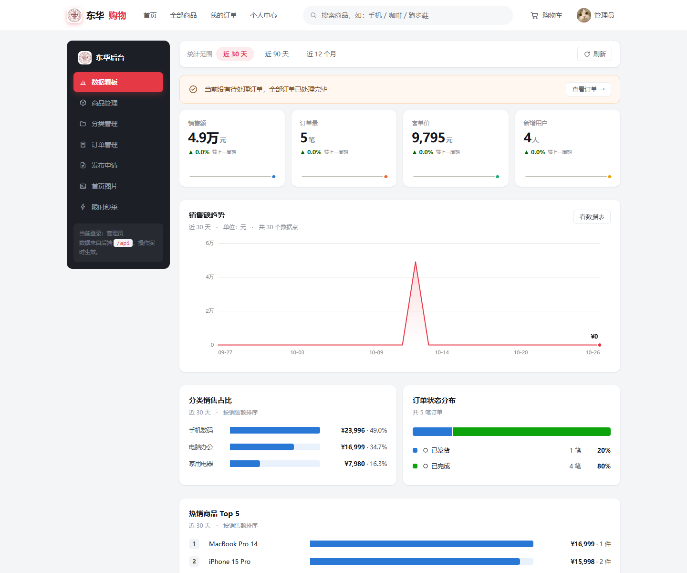
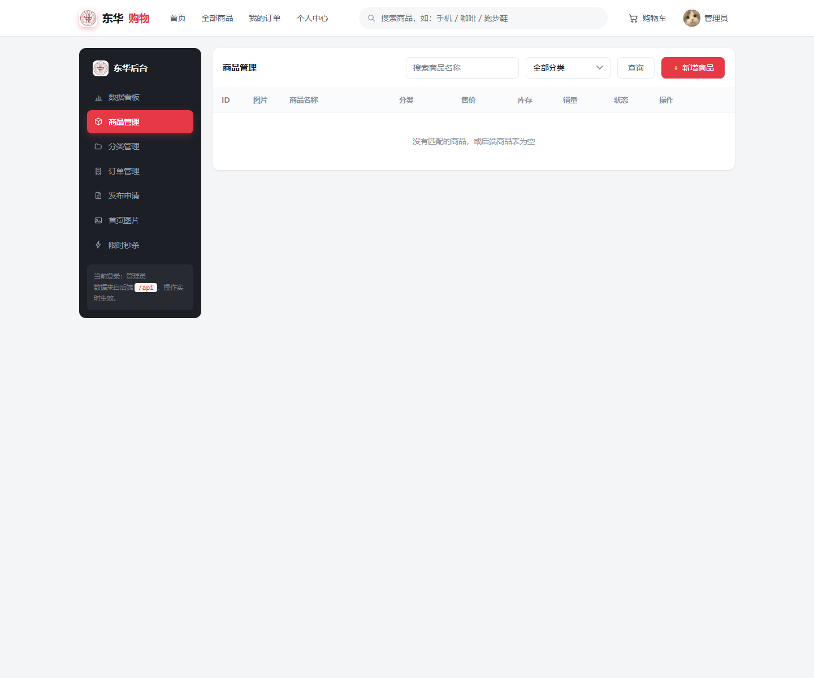
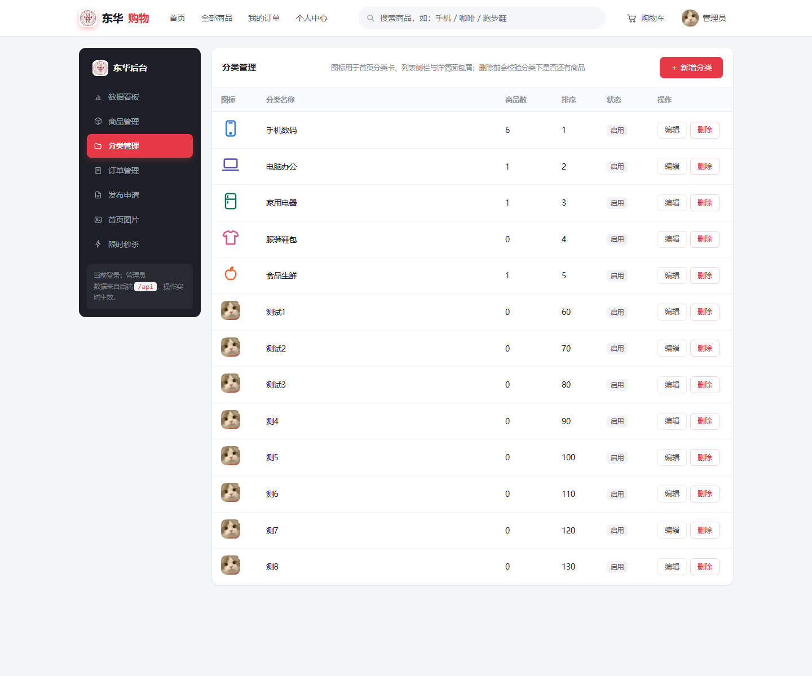
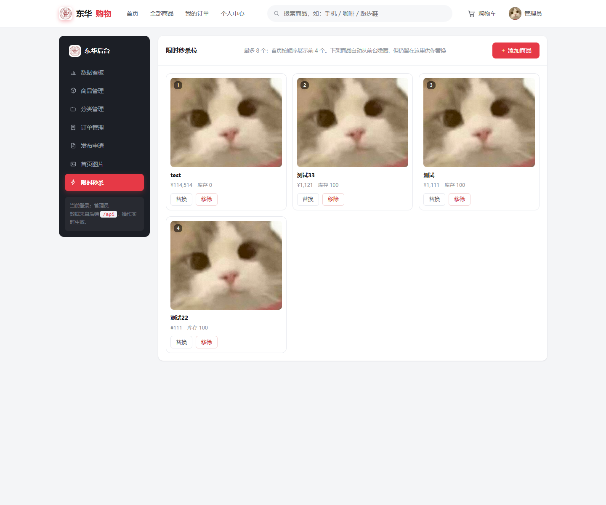
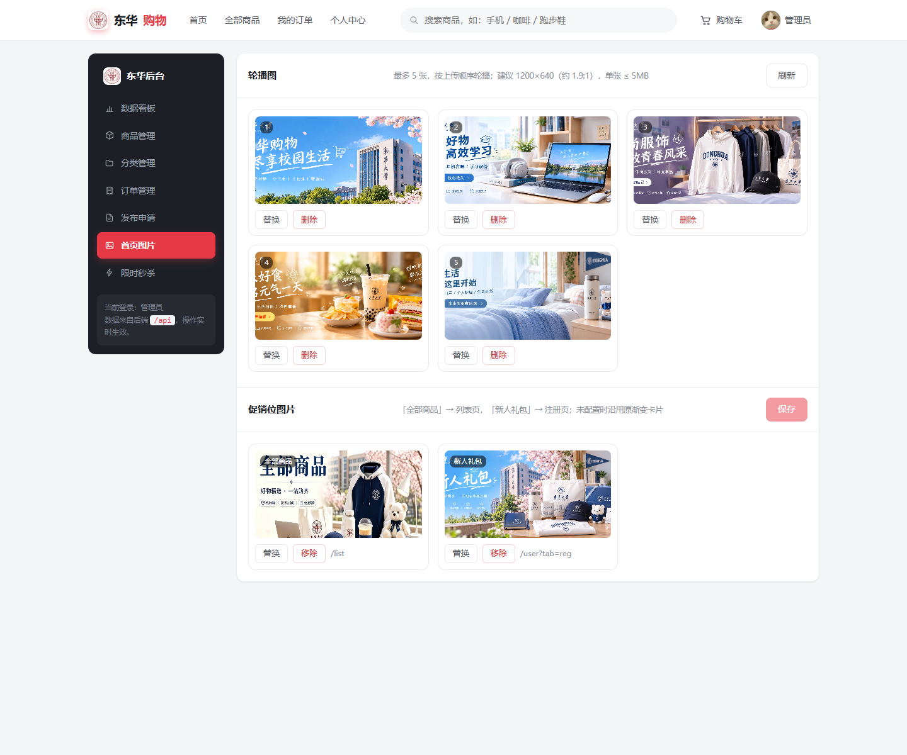
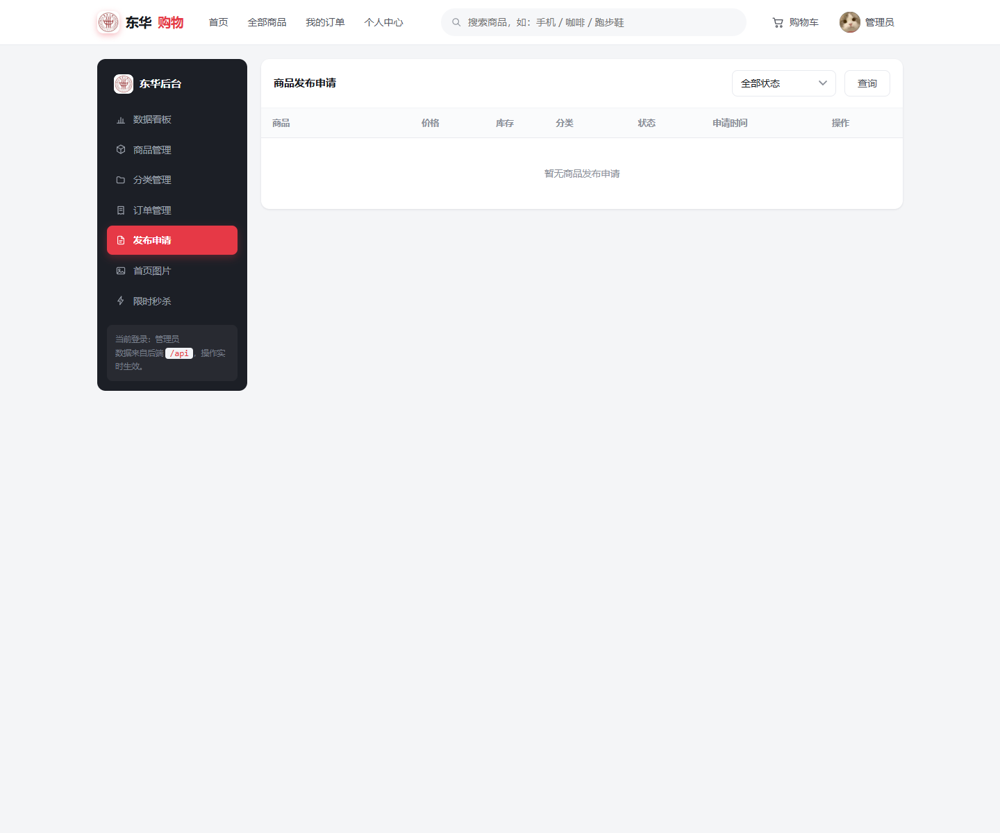
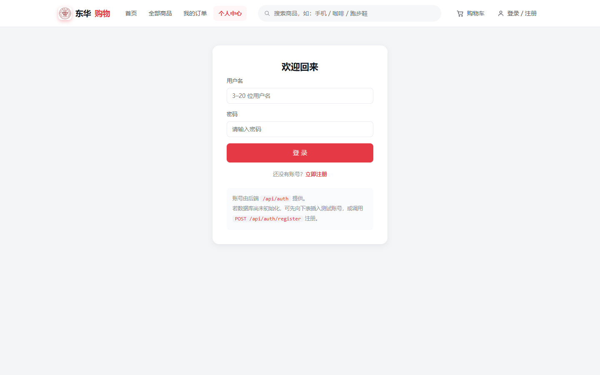
所有接口 HTTP 状态码恒为 200，业务结果通过响应体中的 code 区分：
{
"code": 200,
"message": "操作成功",
"data": { ... }
}
前端在 core.js 中统一处理信封：code = 200 时取出 data；
code = 401 时清除会话并跳转登录；其余情况抛出包含 code 与
message 的对象，由视图提示。后端由 GlobalExceptionHandler 保证
业务异常、参数校验异常与系统异常都返回同一结构。
| 方法 | 路径 | 说明 | 权限 |
|---|---|---|---|
| POST | /api/auth/register | 注册并返回 token | 公开 |
| POST | /api/auth/login | 登录 | 公开 |
| GET | /api/users/me | 当前用户信息 | 登录 |
| PUT | /api/users/me | 修改个人资料 | 登录 |
| GET | /api/categories | 分类列表 | 公开 |
| GET | /api/categories/{id} | 分类详情 | 公开 |
| GET | /api/admin/categories | 后台分类列表（含商品数） | 管理员 |
| POST | /api/admin/categories | 新增分类（重名 2013） | 管理员 |
| PUT | /api/admin/categories/{id} | 编辑分类（含图标 / 封面） | 管理员 |
| DELETE | /api/admin/categories/{id} | 删除分类（有商品 2012） | 管理员 |
| GET | /api/products | 商品分页（分类 / 关键词 / 状态） | 公开 |
| GET | /api/products/{id} | 商品详情（含 images） | 公开 |
| POST | /api/products | 新增商品 | 管理员 |
| PUT | /api/products/{id} | 修改商品 | 管理员 |
| DELETE | /api/products/{id} | 删除商品 | 管理员 |
| GET | /api/cart | 购物车列表 | 登录 |
| POST | /api/cart | 加入购物车 | 登录 |
| PUT | /api/cart/{id} | 修改数量 / 勾选 | 登录 |
| PUT | /api/cart/{id}/checked | 修改勾选状态 | 登录 |
| DELETE | /api/cart/{id} | 删除购物车项 | 登录 |
| GET | /api/addresses | 地址列表 | 登录 |
| POST | /api/addresses | 新增地址 | 登录 |
| PUT | /api/addresses/{id} | 修改地址 | 登录 |
| DELETE | /api/addresses/{id} | 删除地址 | 登录 |
| PUT | /api/addresses/{id}/default | 设为默认地址 | 登录 |
| POST | /api/orders | 提交订单 | 登录 |
| GET | /api/orders | 我的订单 | 登录 |
| GET | /api/orders/summary | 待付款 / 待收货数量 | 登录 |
| GET | /api/orders/{orderNo} | 订单详情 | 登录 |
| POST | /api/orders/{orderNo}/pay | 支付（0→1） | 登录 |
| POST | /api/orders/{orderNo}/cancel | 取消（0→4） | 登录 |
| POST | /api/orders/{orderNo}/confirm | 确认收货（2→3） | 登录 |
| POST | /api/orders/{orderNo}/ship | 发货（1→2） | 管理员 |
| POST | /api/product-apply | 提交发布申请 | 登录 |
| GET | /api/product-apply/my | 我的发布申请 | 登录 |
| GET | /api/admin/product-apply | 申请列表（可按状态） | 管理员 |
| POST | /api/admin/product-apply/{id}/approve | 审核通过 | 管理员 |
| POST | /api/admin/product-apply/{id}/reject | 审核拒绝 | 管理员 |
| POST | /api/common/upload | 上传图片，返回 URL | 登录 |
| GET | /api/admin/stats | 数据看板统计 | 管理员 |
| GET | /api/admin/orders | 全量订单 | 管理员 |
| GET | /api/admin/orders/pending-count | 待发货数量 | 管理员 |
| GET | /api/admin/orders/summary | 待付款 / 待发货摘要 | 管理员 |
| GET | /api/banners | 轮播图列表（仅启用） | 公开 |
| GET | /api/admin/banners | 全部轮播图（含停用） | 管理员 |
| POST | /api/admin/banners | 新增轮播图（满 5 张 2011） | 管理员 |
| PUT | /api/admin/banners/{id} | 替换轮播图 | 管理员 |
| DELETE | /api/admin/banners/{id} | 删除轮播图 | 管理员 |
| GET | /api/home/promos | 两个促销位图片地址 | 公开 |
| PUT | /api/admin/home/promos | 保存促销位图片 | 管理员 |
| GET | /api/flash-sale | 秒杀位列表（仅返回在售） | 公开 |
| GET | /api/admin/flash-sale | 全部秒杀位 | 管理员 |
| POST | /api/admin/flash-sale | 添加（重复 2014 / 超限 2015） | 管理员 |
| PUT | /api/admin/flash-sale/{id} | 替换为另一个商品 | 管理员 |
| DELETE | /api/admin/flash-sale/{id} | 移除秒杀位 | 管理员 |
| code | 含义 | code | 含义 |
|---|---|---|---|
| 200 | 操作成功 | 1001 | 用户名已存在 |
| 400 | 参数错误 | 1002 | 用户名或密码错误 |
| 401 | 未登录 / token 过期 | 1003 | 账号已被禁用 |
| 403 | 无权限 | 2001 | 商品库存不足 |
| 404 | 资源不存在 | 2002 | 购物车为空 |
| 500 | 服务器内部错误 | 2003 | 订单不存在 |
| 2004 | 订单状态不允许该操作 | 2005 | 该申请已审核 |
| 2006 | 单张图片超过 5MB | 2007 | 图片格式不支持 |
| 2008 | 图片数量需为 1-9 张 | 2009 | 图片上传失败 |
| 2010 | OSS 未配置 AccessKey | 2011 | 首页轮播图最多 5 张 |
| 2012 | 该分类下还有商品，无法删除 | 2013 | 分类名称已存在 |
| 2014 | 该商品已在秒杀列表中 | 2015 | 限时秒杀最多 8 件商品 |
matches 校验，接口响应中不返回密码字段。@RequireLogin 与 @RequireAdmin 由拦截器统一执行，
不依赖前端隐藏按钮，普通用户无法通过直接调用接口越权。ThreadLocal，请求结束即清理，防止线程复用串号。accept；user_id 条件，
用户只能操作自己的数据；订单查询还会校验归属。WHERE stock >= #{quantity} 的条件更新，
通过影响行数判断是否成功，避免超卖。@Transactional。v-html），避免后台录入内容注入脚本。| 组件 | 版本要求 | 说明 |
|---|---|---|
| JDK | 17 及以上 | Spring Boot 4 要求 Java 17+ |
| Maven | 3.6+ | 构建与启动 |
| MySQL | 8.0+ | 字符集 utf8mb4 |
| 浏览器 | Chrome / Edge 最新版 | 支持 ES6 与 Fetch API |
| 阿里云 OSS | 可选 | 未配置时自动使用本地磁盘 |
# 全新数据库 mysql -uroot -p < src/main/resources/db/schema.sql mysql -uroot -p < src/main/resources/db/data.sql # 已有旧库：按顺序执行增量迁移（migration_1 ~ migration_7） mysql -uroot -p < src/main/resources/db/migration_1_product_apply.sql mysql -uroot -p < src/main/resources/db/migration_2_product_image.sql mysql -uroot -p < src/main/resources/db/migration_3_banner.sql mysql -uroot -p < src/main/resources/db/migration_4_site_setting.sql mysql -uroot -p < src/main/resources/db/migration_5_category_icon.sql mysql -uroot -p < src/main/resources/db/migration_6_flash_sale.sql mysql -uroot -p < src/main/resources/db/migration_7_category_cover.sql
| 配置项 | 说明 |
|---|---|
spring.datasource.* | 数据库连接，敏感值通过环境变量或本地配置注入 |
jwt.secret | JWT 签名密钥，至少 32 字节 |
storage.type | local 或 oss |
aliyun.oss.* | endpoint、bucket、AccessKey 等 OSS 参数 |
file.upload-dir | 本地存储目录，默认 uploads |
spring.servlet.multipart.* | 单文件与整请求大小限制 |
mvn spring-boot:run # 访问 http://localhost:8080
应用启动时会幂等创建两个示例账号，便于验收：
| 账号 | 密码 | 角色 |
|---|---|---|
admin | 123456 | 管理员（role = 1） |
user | 123456 | 普通用户（role = 0） |
LIKE 模糊查询，数据量增大后需要引入全文检索；seller_id 提供「我的商品」「销售统计」「上下架」能力；